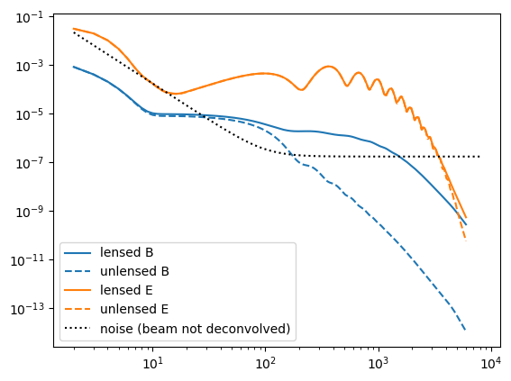
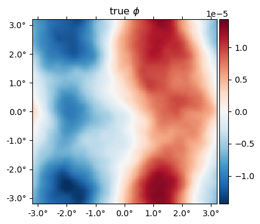
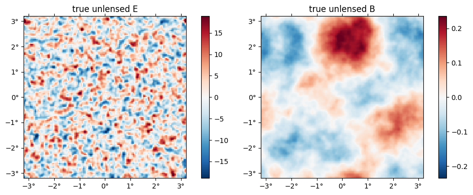
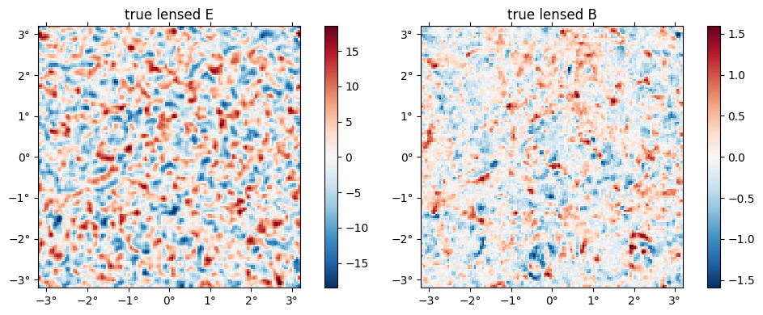
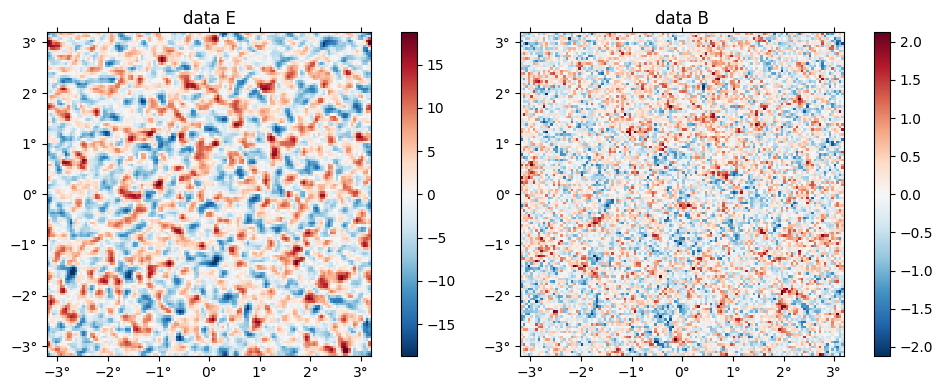
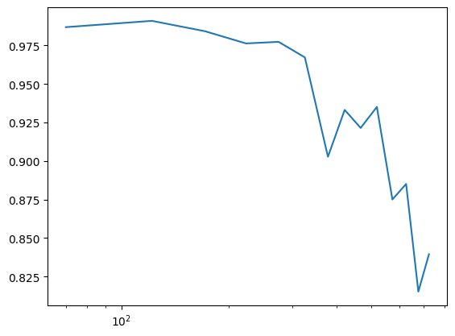
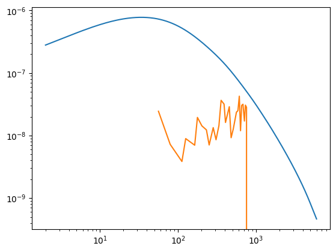
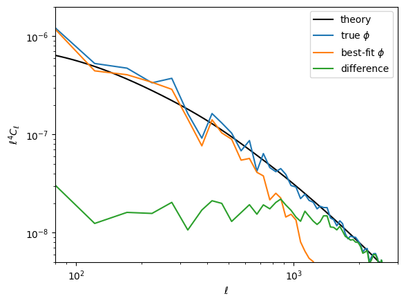

MAP estimation
Here, we give an example of how to compute the joint maximum a posteriori (MAP) estimate of the CMB temperature and polarization fields, $f$, and the lensing potential, $\phi$.
using CMBLensing, PyPlotCompute spectra
First, we compute the fiducial CMB power spectra which generate our simulated data,
Cℓ = camb(r=0.05);Next, we chose the noise power-spectra:
Cℓn = noiseCℓs(μKarcminT=1, ℓknee=100);Plot these up for reference,
loglog(Cℓ.total.BB,c="C0")
loglog(Cℓ.unlensed_total.BB,"--",c="C0")
loglog(Cℓ.total.EE,c="C1")
loglog(Cℓ.unlensed_total.EE,"--",c="C1")
loglog(Cℓn.BB,"k:")
legend(["lensed B","unlensed B","lensed E","unlensed E", "noise (beam not deconvolved)"]);
Configure the type of data
These describe the setup of the simulated data we are going to work with (and can be changed in this notebook),
θpix = 3 # pixel size in arcmin
Nside = 128 # number of pixels per side in the map
pol = :P # type of data to use (can be :T, :P, or :TP)
T = Float32 # data type (Float32 is ~2 as fast as Float64);Generate simulated data
With these defined, the following generates the simulated data and returns the true unlensed and lensed CMB fields, f and f̃ ,and the true lensing potential, ϕ, as well as a number of other quantities stored in the "DataSet" object ds.
@unpack f, f̃, ϕ, ds = load_sim_dataset(
seed = 3,
Cℓ = Cℓ,
Cℓn = Cℓn,
θpix = θpix,
T = T,
Nside = Nside,
pol = pol,
)
@unpack Cf, Cϕ = ds;Examine simulated data
The true $\phi$ map,
plot(ϕ, title = raw"true $\phi$");
The "true" unlensed field, $f$,
plot(f, title = "true unlensed " .* ["E" "B"]);
And the "true" lensed field,
plot(LenseFlow(ϕ)*f, title = "true lensed " .* ["E" "B"]);
The data (stored in the ds object) is basically f̃ with a beam applied plus a sample of the noise,
plot(ds.d, title = "data " .* ["E" "B"]);
Run the optimizer
Now we compute the maximum of the joint posterior, $\mathcal{P}\big(f, \phi \,\big|\,d\big)$
@time fbf, ϕbf, tr = MAP_joint(ds, nsteps=30, progress=:verbose, αmax=0.1);(step=1, χ²=43836.26, Ncg=2)
(step=2, χ²=38474.92, Ncg=9, α=0.012516)
(step=3, χ²=36237.41, Ncg=8, α=0.026335)
(step=4, χ²=35665.59, Ncg=9, α=0.018166)
(step=5, χ²=35276.94, Ncg=8, α=0.020261)
(step=6, χ²=35017.95, Ncg=8, α=0.017005)
(step=7, χ²=34791.74, Ncg=8, α=0.022454)
(step=8, χ²=34639.82, Ncg=8, α=0.015196)
(step=9, χ²=34469.41, Ncg=7, α=0.029120)
(step=10, χ²=34367.64, Ncg=7, α=0.012310)
(step=11, χ²=34160.93, Ncg=7, α=0.061112)
(step=12, χ²=34071.91, Ncg=7, α=0.009033)
(step=13, χ²=33863.61, Ncg=7, α=0.099927)
(step=14, χ²=33814.76, Ncg=7, α=0.008878)
(step=15, χ²=33713.26, Ncg=7, α=0.099927)
(step=16, χ²=33676.56, Ncg=6, α=0.008476)
(step=17, χ²=33642.58, Ncg=7, α=0.053620)
(step=18, χ²=33623.77, Ncg=6, α=0.009566)
(step=19, χ²=33562.09, Ncg=5, α=0.099927)
(step=20, χ²=33552.98, Ncg=5, α=0.017336)
(step=21, χ²=33542.84, Ncg=5, α=0.025802)
(step=22, χ²=33535.12, Ncg=5, α=0.014655)
(step=23, χ²=33523.35, Ncg=5, α=0.039226)
(step=24, χ²=33515.93, Ncg=5, α=0.010942)
(step=25, χ²=33487.38, Ncg=5, α=0.099927)
(step=26, χ²=33482.33, Ncg=5, α=0.010927)
(step=27, χ²=33462.80, Ncg=5, α=0.099927)
(step=28, χ²=33459.02, Ncg=4, α=0.010107)
(step=29, χ²=33443.73, Ncg=4, α=0.099927)
(step=30, χ²=33441.00, Ncg=4, α=0.027225)
59.888361 seconds (58.26 M allocations: 9.533 GiB, 2.98% gc time)Examine results
The expected value of the final best-fit $\chi^2 (=-2\log \mathcal{P}$) is given by the number degrees of freedom in the data, i.e. the total number of pixels in T and/or EB.
χ² = -2tr[end][:lnPcur]33440.996f0dof = length(Map(f)[:])32768Here's how far away our final $\chi^2$ is from this expectation, in units of $\sigma$. We expect this should be somewhere in the range (-3,3) for about 99.7% of simulated datasets.
(χ² - dof)/sqrt(2dof)2.6288909912109375Here's the best-fit $\phi$ relative to the truth,
plot(10^6*[ϕ ϕbf], title=["true" "best-fit"] .* raw" $\phi$", vlim=17);
Here is the difference in terms of the power spectra. Note the best-fit has high-$\ell$ power suppressed, like a Wiener filter solution (in fact what we're doing here is akin to a non-linear Wiener filter). In the high S/N region ($\ell\lesssim1000$), the difference is approixmately equal to the noise, which you can see is almost two orders of magnitude below the signal.
ℓedges = 100:200:3000100:200:2900semilogx(get_ρℓ(ϕbf,ϕ))
1-element Array{PyCall.PyObject,1}:
PyObject <matplotlib.lines.Line2D object at 0x7ff1f7d18c18>(1 / get_ρℓ(ϕbf,ϕ)^2 - 1)InterpolatedCℓs{Float32,CMBLensing.var"#38#39"{Float64,Array{Float32,1},Array{Float32,1},Array{Float32,1}}}(CMBLensing.var"#38#39"{Float64,Array{Float32,1},Array{Float32,1},Array{Float32,1}}(NaN, Float32[69.883934, 121.674126, 171.2532, 223.09958, 275.13376, 325.91238, 378.15732, 421.16135, 466.86844, 518.24414 … 4620.758, 4674.4834, 4729.9565, 4776.6157, 4815.539, 4872.467, 4933.0317, 4972.4272, 5011.935, 5059.5244], Float32[0.025821567, 0.01847291, 0.03158164, 0.048185825, 0.04714632, 0.069004536, 0.22774446, 0.14895427, 0.17769814, 0.14428484 … -1.0, -1.0, -1.0, -1.0, -1.0, -1.0, -1.0, -1.0, -1.0, -1.0], Float32[-0.00014189283, 0.00026440044, 0.0003202574, -1.997735f-5, 0.00043046096, 0.0030383794, -0.0018321583, 0.00062887097, -0.0006503715, 0.0029763351 … 0.0, 0.0, 0.0, 0.0, 0.0, 0.0, 0.0, 0.0, 0.0, 0.0]), true)chain = sample_joint(
ds,
symp_kwargs = [(N=25, ϵ=0.05)],
nsamps_per_chain = 100,
nchains = 1,
nburnin_always_accept = Inf,
progress = :summary
);[32mGibbs chain: 100%|██████████████████████████████████████| Time: 0:06:26[39mget_ρℓ(ϕ,ϕbf,ℓedges=100:50:3000)InterpolatedCℓs{Float32,CMBLensing.var"#38#39"{Float64,Array{Float32,1},Array{Float32,1},Array{Float32,1}}}(CMBLensing.var"#38#39"{Float64,Array{Float32,1},Array{Float32,1},Array{Float32,1}}(NaN, Float32[121.674126, 171.2532, 223.09958, 275.13376, 325.91238, 378.15732, 421.16135, 466.86844, 518.24414, 572.7766 … 2528.3518, 2577.3535, 2626.5024, 2672.5356, 2722.9412, 2776.0034, 2826.1594, 2875.541, 2926.273, 2976.9487], Float32[0.9908896, 0.9845736, 0.97674423, 0.97722894, 0.9671865, 0.90249753, 0.93292904, 0.92147386, 0.9348306, 0.8748428 … Inf, Inf, Inf, Inf, Inf, Inf, Inf, Inf, Inf, Inf], Float32[-0.00012739257, -0.00015101091, 9.315127f-6, -0.00019776882, -0.0012381866, 0.0007076432, -0.00025062147, 0.00025998175, -0.0011000378, 0.00018945953 … NaN, NaN, NaN, NaN, NaN, NaN, NaN, NaN, NaN, NaN]), true)plot(ϕbf, which=:Il)
loglog(ℓ⁴*Cℓ.total.ϕϕ)
loglog(ℓ⁴*Cℓ.total.ϕϕ * (1 / get_ρℓ(ϕbf,ϕ,Δℓ=25)^2 - 1))
1-element Array{PyCall.PyObject,1}:
PyObject <matplotlib.lines.Line2D object at 0x7ff1f7d6cf98>loglog(ℓ⁴ * Cℓ.total.ϕϕ, "k")
loglog(get_ℓ⁴Cℓ(ϕ))
loglog(get_ℓ⁴Cℓ(ϕbf))
loglog(get_ℓ⁴Cℓ(ϕbf-ϕ))
xlim(80,3000)
ylim(5e-9,2e-6)
legend(["theory",raw"true $\phi$", raw"best-fit $\phi$", "difference"])
xlabel(raw"$\ell$")
ylabel(raw"$\ell^4 C_\ell$");
The best-fit unlensed fields relative to truth,
plot([f,fbf], title = ["true", "best-fit"] .* " unlensed " .* ["E" "B"]);
The best-fit lensed field (bottom row) relative to truth (top row),
plot([f̃, LenseFlow(ϕbf)*fbf], title = ["true", "best-fit"] .* " lensed " .* ["E" "B"]);